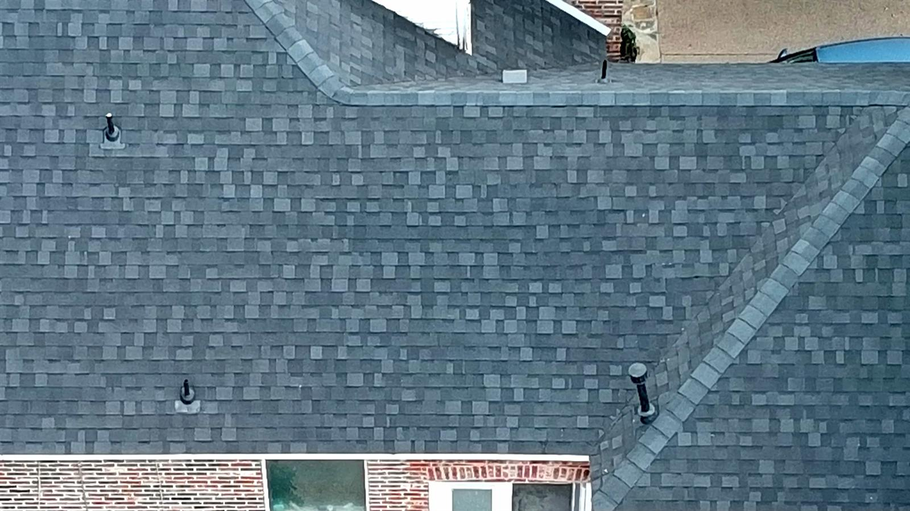

Same home. Documented, then done right.
An old metal patch — gone. Drag the line.
An earlier repair had covered this section of the roof in mismatched metal panels. HomFax documented the full loss; then The Ambassador — a HomFax™ licensed and approved contractor — rebuilt it as one seamless, Class 4 impact-resistant, reinforced roofing system that matches the entire roof. Slide to compare.


↔
Same home. Photos lightly color-corrected; no structural changes to either image. A HomFax™ documented project — work performed by The Ambassador, a HomFax™ licensed and approved contractor.